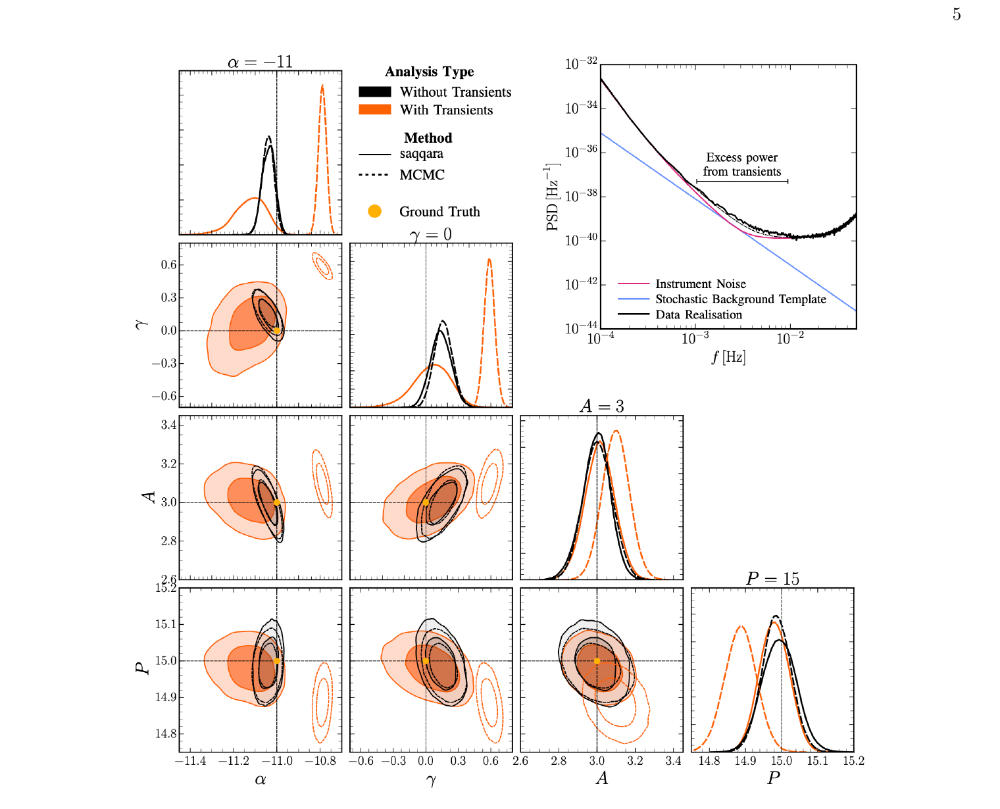

Machine Learning for Astroparticle Physics:
A Crash-course in SBI
Lecture 3, Inference Heads: Flows, Flow Matching, Diffusion
Christoph Weniger, University of Amsterdam (GRAPPA)
Today's Roadmap
NPE, NRE, NLE
three ways to learn a posterior
Normalising flows
change of variables, coupling, live demo
Flow matching and diffusion
ODE vs SDE in one picture
Production showcase
LISA, DINGO, handoff to Lec 4
NPE, NRE, NLE
Three ways to learn a posterior from simulator pairs: one spine, two cousins.
From Lec 2 to NPE — the one-slide leap
Yesterday we trained \(q_\phi(\theta\mid x)\) on \((\theta, x)\) pairs by negative log-likelihood:
Lec 2 setting. The pairs \((\theta_n, x_n)\) were a fixed dataset. The network learns a regression with calibrated uncertainty.
Today. The pairs come from a simulator: \(\theta_n\sim p(\theta)\), \(x_n\sim p(x\mid\theta_n)\). Same loss, same network — but now \(q_\phi(\theta\mid x)\to p(\theta\mid x)\) as \(N\to\infty\).
This is neural posterior estimation (NPE). The whole leap is "the data come from a simulator".
Papamakarios & Murray 2016 (mixture-density), Lueckmann 2017, Greenberg 2019; review: Cranmer, Brehmer, Louppe, PNAS 2020.
The SBI triptych — simulator, compression, inference head
Every neural SBI pipeline you will meet in this school decomposes into three boxes:
Lec 3 lives in the third box. Lec 4 lives in the second. Lec 5 audits whether the whole thing is calibrated.
NRE — the classifier angle
Recall Lec 2 slide 20: a binary classifier trained with cross-entropy has Bayes-optimal logit equal to a log-density ratio. Apply this to SBI.
Build training pairs — joint (matched) vs marginal (shuffled):
\(y=1\): \((\theta, x) \sim p(\theta, x)\), \(y=0\): \((\theta, x) \sim p(\theta)\,p(x)\).
The trained logit is the posterior-to-prior ratio. Posterior: \(p(\theta\mid x) = p(\theta)\,\exp f_\phi(\theta, x)\).
Pros. No flow machinery; no normalisation required; scales easily to high-D \(\theta\) via TMNRE (truncated marginal NRE).
Cons. No direct sampling — need MCMC over \(f_\phi(\theta, x)\) to draw posterior samples; ratio estimation is harder to calibrate at the tails.
Hermans, Begy & Louppe 2020; Miller et al. (swyft) 2021; Alvey et al. (saqqara) 2023.
NLE — model the forward density
Instead of \(p(\theta\mid x)\), learn the likelihood \(p(x\mid\theta)\) directly with a conditional density estimator:
Recover the posterior the classical way:
\( p(\theta\mid x_{\rm obs}) \;\propto\; q_\phi(x_{\rm obs}\mid\theta)\,p(\theta) \) — sample with MCMC.
Pros. Plays nicely with hierarchical models — you can plug \(q_\phi\) into a probabilistic programming language and condition on anything.
Cons. Modelling \(x\) is often harder than modelling \(\theta\) (think 16k-sample strain); final sampling step needs MCMC.
Papamakarios, Sterratt & Murray (SNL) 2019; sbi toolbox (Tejero-Cantero et al. 2020).
NPE, NRE, NLE, one table to rule them all
| NPE | NRE | NLE | |
|---|---|---|---|
| Models | \(q_\phi(\theta\mid x)\) | \(\log r_\phi(\theta, x)\) | \(q_\phi(x\mid\theta)\) |
| Loss | NLL | cross-entropy | NLL |
| Sampling | direct, single forward pass | MCMC on \(p(\theta)\,e^{f_\phi}\) | MCMC on \(q_\phi\,p(\theta)\) |
| Amortised | yes | yes (re-MCMC per obs) | partial (re-MCMC per obs) |
| High-D \(\theta\) | flow head needed | scales via marginal targeting (TMNRE) | hard — \(x\) usually higher-D |
| Production examples | DINGO (GW PE) | saqqara (LISA SGWB) | field models / cosmology |
Normalising flows
Exact density, exact sampling, arbitrary shape, bought by one change-of-variables formula.
Why we need flows
Real posteriors in physics are often multimodal, curved, or heavy-tailed. Gaussians cannot represent them. (Lec 2 slide 24 callback.)
A workable inference head must satisfy three things at once:
- Evaluate \(\log q_\phi(\theta\mid x)\) — needed for the NPE loss.
- Sample \(\theta\sim q_\phi\) — needed for corner plots and downstream analyses.
- Arbitrary shape — multimodal, curved, heavy-tailed.
Change of variables
1D. If \(z\sim p_Z(z)\) and \(\theta = f(z)\) with \(f\) invertible and differentiable,
\( p_\Theta(\theta) \;=\; p_Z(z)\,\bigl|dz/d\theta\bigr| \;=\; p_Z(f^{-1}(\theta))\,\bigl|df/dz\bigr|^{-1} \)
Multivariate. For \(\mathbf{z}\in\mathbb{R}^d\), \(\boldsymbol\theta = f(\mathbf{z})\),
Flow design = pick architectures where \(J\) is triangular, so \(|\det J| = \prod_i J_{ii}\) costs \(\mathcal{O}(d)\).
Worked example — warping a Gaussian
Base \(z\sim\mathcal{N}(0, 1.5^2)\); map \(\theta = z + A\sin z\). As \(A\to 1\), the derivative collapses near \(z=\pm\pi\) and mass piles up: the warped target becomes bimodal — for free.
Same density formula \(p_\Theta(\theta) = p_Z(z)\,|1 + A\cos z|^{-1}\). The dotted curve shows the map \(\theta(z)\) on the right axis.
Normalising flow = stack of invertible maps
- Sampling \(\boldsymbol\theta\sim q_\phi\): draw \(\mathbf{z}\), push forward through the stack.
- Density evaluation at given \(\boldsymbol\theta\): invert the stack, evaluate \(p_Z\), correct with Jacobians.
- Composition of invertible maps is invertible — deep flows stay a valid density.
Flexibility grows with depth \(L\), just like MLPs — but every layer preserves the probability axioms.
Log-density by chain of Jacobians
Let \(\mathbf{z}_\ell = f_\ell(\mathbf{z}_{\ell-1})\), \(\mathbf{z}_0 = \mathbf{z}\), \(\mathbf{z}_L = \boldsymbol\theta\). Change-of-variables composes:
\( \log q_\phi(\boldsymbol\theta\mid x) \;=\; \log p_Z(\mathbf{z}_0) \;-\; \sum_{\ell=1}^L \log\bigl|\det \partial f_\ell/\partial\mathbf{z}_{\ell-1}\bigr| \)
Key design constraint: each \(|\det \partial f_\ell/\partial\mathbf{z}_{\ell-1}|\) must be cheap.
Affine coupling layers
Split \(\mathbf{z} = (\mathbf{z}_A, \mathbf{z}_B)\). Define
Invertibility. \(\mathbf{z}_A\) passes through untouched; \(\mathbf{z}_B\) is scaled-and-shifted given \(\mathbf{z}_A\). Trivially invertible in closed form — no neural-net inverse needed.
Cheap Jacobian. \(J\) is triangular ⇒ \(\log|\det J| = \sum_i s_\phi(\mathbf{z}_A)_i\). \(\mathcal{O}(d)\), not \(\mathcal{O}(d^3)\).
Alternate which half is "active" across layers (RealNVP, Dinh et al. 2017). Stack \(L\) of these → expressive flow.
Conditional flows — plugging in the data
For SBI we want \(q_\phi(\theta\mid x)\), not just \(q_\phi(\theta)\). Let the scale and shift networks depend on the (compressed) data:
End-to-end picture.
- Embedding \(T_\phi(x)\) compresses the raw data (CNN, Transformer, GNN — Lec 4).
- Conditional coupling flow turns \(\mathbf{z}\sim\mathcal{N}(0, I)\) into \(\theta\), with all \((s, t)\) MLPs receiving \(T_\phi(x)\) as side input.
- Loss: \(-\log q_\phi(\theta^\star\mid x)\), averaged over simulator pairs.
Every component — embedding, coupling \(s, t\), base distribution — is trained together by backprop. One loss, one optimiser.
Flow pushforward — live 2D demo
Target: banana (grey).
Loss: \(-\mathbb{E}[\log q_\phi(\theta)]\)
loss: —
Colours tag fixed \(z\)-points by angle — watch them get warped into the curved target.
Trained live in your browser with TF.js. Exact log-density via \(\log|\det J| = \sum_\ell s_\ell\).
NPE with flows — the inference-head slot of the triptych
A single loss \(\mathcal{L} = -\frac{1}{N}\sum_n\log q_\phi(\theta_n\mid x_n)\) trains:
- the embedding \(T_\phi\),
- the coupling MLPs \(s_\phi, t_\phi\) inside each layer,
- any learnable base parameters.
Amortised. Train once, then inference on any new \(x_{\rm obs}\) is one forward pass + cheap sampling from the flow.
Flow matching and diffusion
Two continuous-time pictures sharing one visual anchor, ODE vs SDE.
Continuous-time generative models — one picture
Coupling flows compose discrete invertible maps. The next two families take the same idea to continuous time: pull samples through a vector field over \(t\in[0, 1]\).
\(d\theta/dt = v_\phi(\theta, t)\) — smooth, deterministic trajectories.
\(d\theta = b_\phi(\theta, t)\,dt + g(t)\,dW_t\) — noisy, stochastic paths.
Both transport a base \(p_0\) (Gaussian noise) into the target \(p_1\) (posterior) over \(t\in[0,1]\). One uses an ODE, the other an SDE.
Flow matching
Learn a velocity field \(v_\phi(\theta, t)\) such that the ODE \(\;d\theta_t/dt = v_\phi(\theta_t, t)\), \(\theta_0 \sim p_0\), \(\theta_1 \sim p(\theta\mid x)\) transports the base noise to the posterior.
Sampling. Draw \(\theta_0\sim p_0\); integrate the learned ODE with any black-box solver (Euler, RK4, adaptive). Typically 10–50 steps.
Density. Available via instantaneous change-of-variables (Hutchinson trace), rarely cheap. FM is mostly used as a sampler.
Lipman et al. 2023 (ICLR). SBI: Dax et al. 2023 (DINGO-FM), Wildberger et al. 2023.
Diffusion / score-based generative models
Define a forward SDE that turns data into noise:
\( d\theta_t = -\tfrac{1}{2}\beta(t)\theta_t\,dt + \sqrt{\beta(t)}\,dW_t, \quad t\in[0, 1] \)
Learn the score \(s_\phi(\theta, t, x) \approx \nabla_\theta\log p_t(\theta\mid x)\) by denoising:
Sampling = integrate the reverse SDE (or its probability-flow ODE) from \(t=1\) (noise) back to \(t=0\) (sample). 50–500 steps typical.
SBI flavour. Condition the score on \(x\) (or \(T_\phi(x)\)). One trained score net amortises over all observations.
Sohl-Dickstein et al. 2015; Song & Ermon 2019; Ho et al. (DDPM) 2020; Song et al. (score SDE) 2021. SBI: Geffner et al. 2023, Sharrock et al. 2024.
When to reach for which inference head
| Coupling flow | Flow matching | Diffusion | |
|---|---|---|---|
| Exact log-density | yes, cheap | yes, expensive (trace) | yes, expensive |
| Sampling cost | one forward pass | 10–50 ODE steps | 50–500 SDE steps |
| Training stability | good, architecture-constrained | very good, regression loss | excellent |
| Scales to very high-D \(\theta\) | moderate | good | excellent |
| Shines when | medium-D, need fast amortised \(\log q\) | medium-D, fast amortised sampler | very high-D (images, fields) |
Production showcase
Two production examples, then a one-slide bridge to Lec 4.
Application — stochastic GW background with LISA

Problem. LISA data = instrument noise + stochastic GW background + hundreds of unresolved transient sources. Goal: infer the SGWB parameters.
Why SBI. Likelihood over the transient population is intractable; MCMC either ignores transients (biased) or samples their full parameter space (prohibitive).
Result. TMNRE (via saqqara) automatically marginalises over the transient nuisance and recovers the injection — matches clean-case MCMC.
Take-away. The nuisance moves into the simulator. No likelihood engineering needed.
Alvey, Bhardwaj, Domcke, Pieroni & Weniger, arXiv:2309.07954.
Application — DINGO for binary-merger parameter estimation

DINGO = NPE with a conditional normalising flow on GW strain.
- Simulator: waveform model + detector noise PSDs (LIGO/Virgo).
- Embedding \(T_\phi\): whitened strain → conv. + transformer summary.
- Head: 15-D conditional flow (masses, spins, distance, sky).
Production wins.
- \(\sim\!\)seconds per event; classical MCMC takes days.
- DINGO-IS adds importance-sampling reweighting → unbiased posterior + evidence.
- DINGO-FM (2023): flow-matching variant, further wall-time savings.
Dax et al. 2021 (PRL); Dax et al. 2023 (NeurIPS).
Embedding teaser, where does the summary come from?
Every demo today acted on a low-D summary \(s = T_\phi(x)\) and politely ignored where \(s\) came from. In production:
- LIGO strain: 16 384 samples per detector, per 4-second segment.
- Strong-lensing images: \(256\!\times\!256\) pixels per system.
- Cosmology fields: 256³ voxels.
- Spectra: a few thousand wavelength bins.
A flat MLP on raw input has too many parameters and no inductive bias.
Key Takeaways
- NPE, NRE, NLE: three estimators trained on simulator pairs; NPE models the posterior directly, NRE its ratio to the prior, NLE the forward likelihood.
- Normalising flows: stack of triangular-Jacobian maps gives exact density and exact sampling at the same time; coupling layers make the Jacobian cheap.
- Flow matching and diffusion: push the same idea into continuous time; one learns an ODE velocity, the other an SDE score; both regress against simple closed-form targets.
- Production showcase: TMNRE on LISA SGWB and NPE-flows in DINGO show what the inference-head slot actually buys at scale.
- The conceptual jump: the inference-head box was the last unknown in the triptych; Lec 4 zooms into the compression box that feeds it.
Summary & What's Next
NPE, NRE, NLE
- NPE: direct posterior.
- NRE: classifier on joint vs marginal.
- NLE: forward likelihood + MCMC.
Normalising flows
- Change of variables, triangular Jacobian.
- Affine coupling layers (RealNVP).
- Conditional on the data summary.
Flow matching and diffusion
- FM: ODE velocity, regression loss.
- Diffusion: score-matching on a SDE.
- Shine for high-D parameters.
Production showcase
- LISA SGWB via TMNRE (saqqara).
- DINGO: NPE on GW strain, seconds per event.
- Handoff to Lec 4, the compression box.
Next lecture: the compression box \(T_\phi(x)\), with CNNs, transformers, and GNNs trained jointly with the inference head.